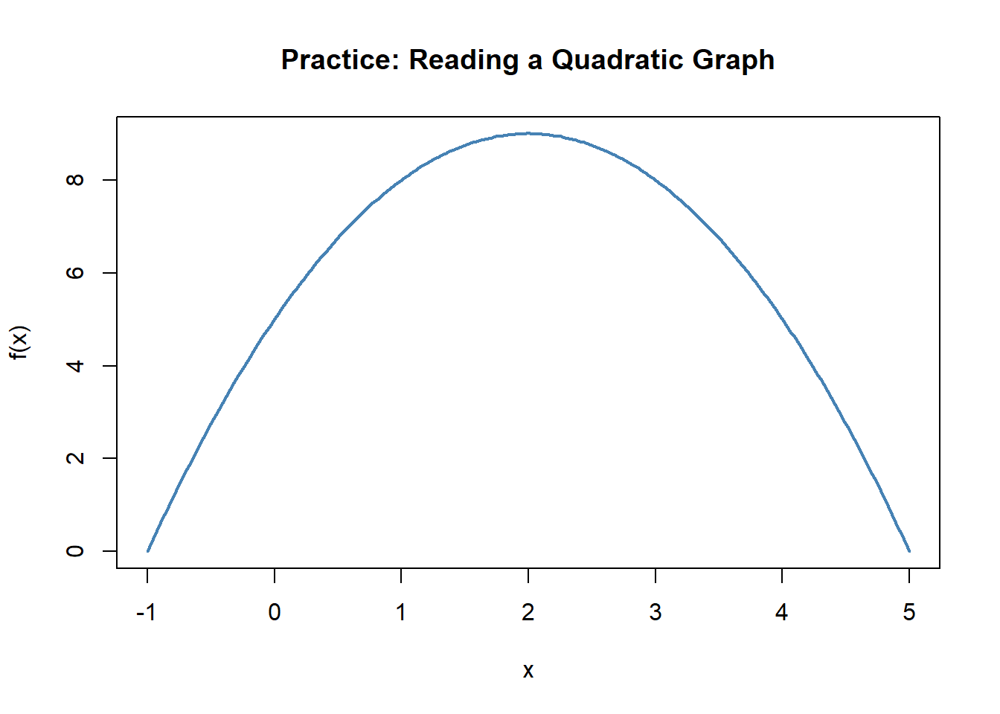
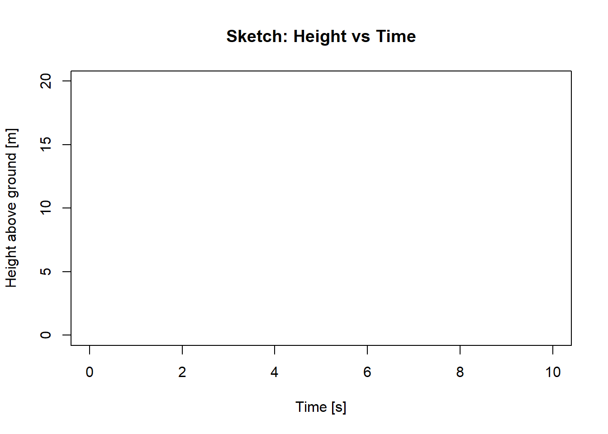
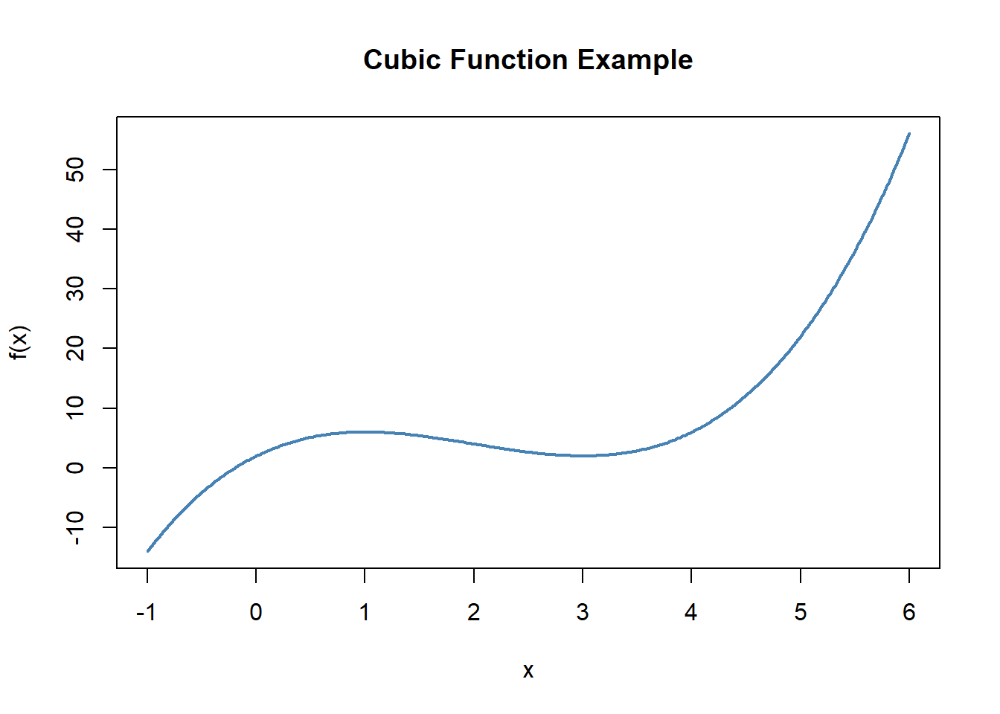
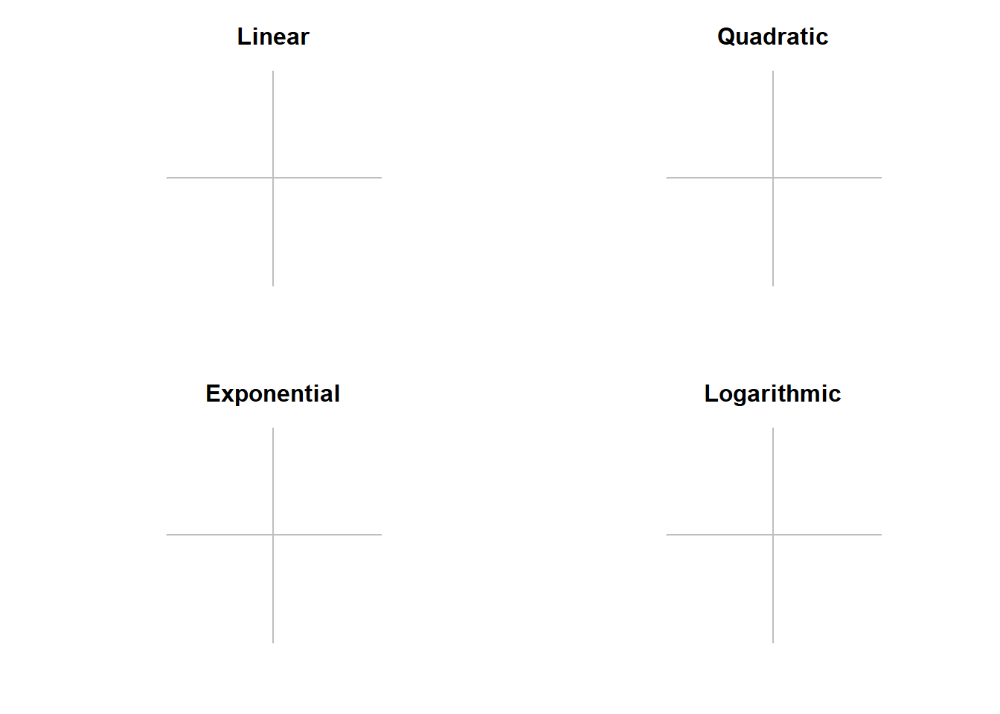

Chapter 8 Pre-Calculus Foundations Workbook
8.1 Learning Objectives
By the end of this chapter, you will be able to:
- Interpret and compare functions from graphs, tables, and formulas.
- Track units through computations and check results for reasonableness.
- Build and evaluate a simple model for an environmental variable as a function of time and elevation.
It may have been a while since you last used some of your pre-calculus knowledge. Don’t worry if certain topics feel unfamiliar—we’ll walk through each concept with context and practice.
This chapter is designed to help you review and refresh the foundational math skills that will support your success in this course. Think of it as a toolbox: later chapters will point to specific tools you’ll need to solve real problems, and those are the ideal moments to revisit them. Concepts stick best when learned in context—so come back to this chapter anytime you need a quick refresher.
8.3 What You’re Expected to Know
To get the most out of this course, you should feel reasonably comfortable with:
- Working with functions and interpreting graphs
- Manipulating algebraic equations
- Rules for exponents and logarithms
- Understanding and converting units
- Reading and setting up word problems
If these topics feel rusty, that’s perfectly normal. This chapter is here to get you back up to speed—and to remind you that you already have more tools than you might think.
8.4 How to Approach Calculus Problems
Calculus is about making sense of change. Use these steps as a guide when solving problems.
8.4.1 Analogy Prompt:Planning a Hike
Think about the process of planning a hike
- What decisions do you make to undertake this task?
- How do you weigh different factors?
- What “tools” do you already have that help you make choices?
How might this be similar to the way we’ll approach calculus problems?
Notes:
8.4.2 Clarify the Ask
Prompt:
What are we trying to answer - define the questions in your own terms.
Notes:
8.4.3 List the Givens
Prompt:
List the variables, units, and known values.
Make a quick sketch if it helps.
Notes:
8.4.4 Translate the Math
Prompt:
Can you think of an equation that might be helpful for this problem?
Think about what each term means in your own words?
Notes:
8.4.5 Work Step by Step
Practice:
Solve the simple problem, but explain each step:
- What did you do?
- Why?
- What does the result mean?
Then think about complexity:
- What assumptions did I make that weren’t realistic
Notes:
8.5 How We Communicate Relationships
Functions describe how one quantity depends on another. We can show this relationship in different ways:
- Words
- Graphs
- Tables
- Equations
Each representation tells the story differently. Some make patterns clear, others make calculations easy.
8.5.1 Your Turn
Practice:
Describe how the air temperature has changed in the last 24 hours. Try using each representation:
- Write a short statement in words.
- Sketch or imagine a graph.
- Create a small table of values.
- Suggest a simple equation.
Then reflect:
- What are the pros/cons of each method?
- What do you gain or lose when switching representations?
Notes:
8.5.2 Discussion Prompt
Practice:
Air temperature usually drops as you climb a mountain (the “lapse rate”).
- How would you represent this relationship in words, graphs, tables, and equations?
- If the lapse rate is about 6.5 °C per 1000 m, what temperature do you predict at Mount Rainier’s summit (4392 m) if it’s 18 °C at sea level?
- What does the slope of your function represent?
Notes:
8.6 Functions and Their Representations
Functions are input–output machines: you put something in, apply a rule, and get something out.
They can be written in many forms, but always represent a relationship.
8.6.1 Understanding \(f(x)\)
Practice:
- What does \(f(x)\) mean in your own words?
- Identify the input, the rule, and the output in a function.
- Give one real-world example of a function you’ve seen.
Notes:
8.6.2 Meaningful Names
Practice:
Let’s look at two functions:
a generic function like \(f(x) = 0.2x + 3\)
\(T(d) = 0.2d +3\) where d is distance from the shore and T is the land temperature
- What are the differences between these two functions?
- How does changing the variable names affect interpretation?
- How does changing the variable names change the results?
- What are the differences between these two functions?
Notes:
8.6.3 Multiple Inputs
Practice:
Think of an environmental process that depends on more than one variable.
- Write a function with two inputs (e.g., \(T(t,h)\) for temperature as a function of time and elevation).
- What do each of the variables and parameters represent?
- Which variables might you ignore to keep the model simple?
Notes:
8.6.4 Activity: Growth of a Tree
Prompt:
In a group, discuss the factors that control the growth of a tree.
- Write a pseudo-equation in the form
\[\text{Growth} = f(\text{Variable 1}, \text{Variable 2}, \ldots) \]
- How many variables drive tree growth?
- Which ones would you include first in a simple model?
Notes:
8.6.5 Activity: Modeling Temperature
Practice:
We can model temperature as a function of time and elevation:
- Start with a daily cycle at sea level.
- Adjust with the lapse rate (–6.5 °C per 1000 m).
- Combine them into \(T(t,h)\).
Reflect:
- At what time of day is the difference between sea level and 2000 m greatest?
- What happens to the daily temperature range as elevation increases?
- Which variable (time or elevation) has the stronger effect in your model?
Notes:
8.6.6 Activity: Telling the Story of a Complex Equation
Practice:
Consider the following model for photosynthesis in a plant canopy:
\[ A(t, I, T) = A_{\max} \cdot \frac{I}{I + K} \cdot e^{-0.01(T - 25)^2} \cdot (1 - e^{-0.1t}) \]
Where:
- \(A(t, I, T)\) = photosynthesis rate (µmol CO₂ m⁻² s⁻¹)
- \(A_{\max}\) = maximum photosynthesis capacity
- \(I\) = light intensity (µmol photons m⁻² s⁻¹)
- \(K\) = half-saturation constant for light
- \(T\) = temperature (°C)
- \(t\) = time since sunrise (hours)
Prompt:
- Tell the story of this equation in plain language.
- How does each factor (light, temperature, time) influence photosynthesis?
- Which parts of the equation act like limits or controls?
- What would happen if one variable stayed constant while the others changed?
Notes:
Seeing math as a complex story rather than symbols is a key to building mathematical literacy
8.7 Graphing and Interpreting Change
8.7.1 Key Ideas to Explore
- When is a function increasing or decreasing?
- Where are the peaks and valleys?
- How does the graph bend (concavity)?
- How do these patterns connect to environmental systems?
8.7.2 Practice Reading a Graph
Activity:
Look at a graph of a quadratic function (or sketch one).

Figure 8.1: Quadratic function for practice: Where is it increasing or decreasing?
- Where is it increasing? Where is it decreasing?
- How do you know when the slope is positive, zero, or negative?
- What real-world system might this graph represent?
8.7.3 The Ball Analogy
Imagine throwing a ball straight up in the air.

Figure 8.2: Empty axes for sketching height vs. time.
Try to sketch the vertical position of the ball through time.
- When is it rising?
- When is it at its peak?
- When is it falling?
- How does the slope of the height vs. time graph change throughout?
8.7.4 Cubic Example
Practice:
Consider the function \(f(x) = x^3 - 6x^2 + 9x + 2\).

Figure 8.3: Cubic function example with turning points.
- Where is the function increasing? Where is it decreasing?
- Where does it reach local maxima and minima?
- How does the concavity change (curving up vs curving down)?
- What real-world process might this model - can you tell a story?
8.7.5 Connecting Math to Environment
Practice:
Sketch or imagine a graph for each of these:
- A river’s flow during a flood event
- The daily temperature cycle (morning to night)
- The growth of algae in a lake after a nutrient spill
For each:
- Where is it increasing/decreasing?
- Where would you expect peaks or valleys?
- How does concavity help tell the story?
8.8 Key Function Types
Here are some of the most common function types you’ll see in environmental systems:
| Function Type | Form | Example |
|---|---|---|
| Linear | \(y = mx + b\) | Streamflow increasing steadily over time |
| Quadratic | \(y = ax^2 + bx + c\) | Pollution dispersal from a point source |
| Exponential | \(y = a \cdot b^x\) | Invasive species population growth |
| Logarithmic | \(y = \log(x)\) | pH scale or sound intensity |
8.8.1 Explore the Shapes
Practice:
Sketch the graphs of linear, quadratic, exponential, and logarithmic functions.

Figure 8.4: Clean blank axes without labels for sketching.
- How do they look different?
- Which ones keep increasing forever?
- Which ones turn around?
- What about curvature?
Notes:
8.9 Units, Rates, and Word Problems
Units tell the story of your math. They help you avoid mistakes, interpret results, and check reasonableness.
8.9.1 Why Units Matter
Practice:
Consider the formula for streamflow:
\[ Q = A \cdot v \]
Where:
- \(Q\) = streamflow
- \(A\) = cross-sectional area
- \(v\) = velocity )
- Write typical units for each of the variables.
- Do the units on both sides of the equation match?
- If not, what needs to change?
Notes:
8.9.2 Mars Climate Orbiter (Unit Mismatch)
Prompt:
A famous NASA mission failed because one team used English units and another used metric.
- Where in your work could a mismatch like that happen?
- What quick unit checks could catch it?
Notes:
I hope you’ve never made a mistake that cost you $300M+
8.9.3 Average Rate of Change (CO₂ Example)
Practice:
Atmospheric CO₂ increases from 400 ppm to 420 ppm over 5 years.
1) Compute the average rate of change (include units).
2) Repeat without numbers — use only symbols/units.
3) Interpret: What does your rate mean in words?
Notes:
8.9.4 Build a Rate From Units Only
Practice:
You measure rainfall in mm over hours.
- Form a meaningful rainfall rate using just the units (no numbers).
- What does that rate tell you physically?
- Think of situations where that rate would be useful.
Notes:
8.10 Getting Comfortable with Word Problems
Word problems are about translation: turning words into math and then back into real-world meaning.
8.11 Skills Drills
These drills are for extra practice. Each topic includes a few problems that build from basic recall to real-world application.
8.11.1 Exponents
Level 1: Evaluate \(3^4\).
Level 2: Simplify \(\tfrac{2^5}{2^2}\).
Level 3: Solve for \(x\): \(4^x = 64\).
Application:
A bacterial culture triples every 6 hours. Write an exponential model and find the growth factor.
8.11.2 Logarithms
Level 1: Evaluate \(\log_{10}(1000)\).
Level 2: Simplify \(\log(50) - \log(5)\).
Level 3: Solve for \(x\): \(\ln(x) = 2\).
Application:
The pH of a solution is given by \(\text{pH} = -\log_{10}[H^+]\).
Find the pH when \([H^+] = 10^{-6}\).
8.11.3 Factoring
Level 1: Factor \(x^2 - 9\).
Level 2: Factor \(2x^2 + 6x\).
Level 3: Solve by factoring: \(x^2 - 4x - 12 = 0\).
Application:
The area of a rectangle is \(A = x^2 + 7x + 10\).
Factor to find possible integer side lengths.
8.11.4 Expansion
Level 1: Expand \((x + 4)(x + 1)\).
Level 2: Expand \((2x - 3)^2\).
Level 3: Expand and simplify \((x + 1)(x^2 - 2x + 3)\).
Application:
The revenue for selling \(x\) items at a price of \((5 - 0.2x)\) each is
\(R(x) = x(5 - 0.2x)\). Expand and simplify.
8.11.5 Function Evaluation
Level 1: If \(f(x) = x^2 + 1\), find \(f(5)\).
Level 2: If \(f(x) = 3x + 2\), evaluate \(f(a + h)\).
Level 3: If \(f(x) = \tfrac{1}{x}\), evaluate \(f(f(x))\).
Application:
If \(C(x) = 200 + 4x\) is the cost of producing \(x\) items, evaluate \(C(50)\).
8.11.6 Simplifying Expressions
Level 1: Simplify \(\tfrac{x^2 - 4}{x - 2}\).
Level 2: Simplify \(\tfrac{3x}{\tfrac{x}{3}}\).
Level 3: Simplify \(\tfrac{x^3y}{x^2y^2}\).
Application:
The velocity of a falling object is \(v(t) = \tfrac{2t^2 - 8}{t - 2}\).
Simplify the expression.
8.11.7 Unit Conversions
Level 1: Convert \(1500\ \text{m}\) to km.
Level 2: Convert \(60\ \text{km/h}\) to m/s.
Level 3: Convert \(2.5\ \text{days}\) to seconds.
Application:
A pollutant concentration is \(0.002\ \text{g/L}\). Express in mg/L.
8.11.8 Solving Equations
Level 1: Solve \(3x + 5 = 20\).
Level 2: Solve \(x^2 - 16 = 0\).
Level 3: Solve \(\sqrt{x + 4} = 5\).
Application:
A ball is launched with \(h(t) = -5t^2 + 15t + 2\).
Solve for when the ball hits the ground.
8.11.9 Function Composition & Inverses
Level 1: If \(f(x) = 2x\) and \(g(x) = x+3\), find \(f(g(2))\).
Level 2: Find the inverse of \(f(x) = 3x - 7\).
Level 3: If \(h(x) = \tfrac{1}{x}\), evaluate \(h(h(x))\).
Application:
Temperature in Fahrenheit is \(F(C) = \tfrac{9}{5}C + 32\).
Find the inverse to convert back to Celsius.
8.11.10 Rates & Units
Level 1: A tree grows from 2 m to 2.5 m in 1 year. What is the average rate of growth?
Level 2: A river flows 30 km in 5 hours. Find the average speed in km/h.
Level 3: A city’s population increases from 1.2 to 1.5 million in 8 years. Find the average annual growth rate.
Application:
Atmospheric CO₂ rises from 400 ppm to 416 ppm in 4 years.
Find the average rate of change in ppm/year.
8.12 Skills Drills - In- Class
8.12.1 Getting Back in the Groove
You’ve seen all of these operations before — expanding algebraic expressions, solving for variables, simplifying equations — but it’s totally normal if some of those steps feel rusty right now.
This section gives you a high-repetition practice zone to help wake up your math brain. Think of this like stretching before a run: each drill refreshes a skill you’ll use constantly in calculus.
Goal: Get faster and more confident with everyday math operations that form the foundation of this course.
Don’t worry if you don’t remember everything right away. These are review skills — and the best way to remember them is to do them. A lot.
8.12.2 Function Evaluation
How-To Evaluate a Function
- To evaluate, substitute the input into the function rule.
- Example: If \(f(x) = x^2 + 1\), then \(f(3) = 3^2 + 1 = 10\).
- You can also evaluate at expressions: \(f(a + h)\) means plug \((a+h)\) everywhere \(x\) appears.
🟢 Level 1: Recall
Let \(f(x) = 2x^2 - 3\).
- Find \(f(4)\)
- Find \(f(a + h)\)
🟡 Level 2: Apply Substitution
Let \(f(x) = x^3 + 3(x - 2)^2 + \tfrac{1}{4x}\).
- Evaluate \(f(2)\)
- Evaluate \(f(t)\)
🔴 Level 3: Mixed Practice
Let \(f(x) = \dfrac{2}{x} + e^{2x}\).
- Evaluate \(f(a^2)\)
- Evaluate \(f(a + h)\)
- Evaluate \(f(x^2 - x)\)
- Evaluate \(f(\triangle)\)
- Evaluate \(f(\blacksquare)\)
Applications
The total carbon stored in a plot is modeled by \(C(x) = 12x + 150\).
Find the carbon stored when \(x = 25\).The nitrate concentration (mg/L) in a river is modeled by \(N(t) = 8e^{-0.1t}\).
Evaluate \(N(5)\).
8.12.3 Function Composition & Inverses
How-To
- Composition: \(f(g(x))\) means plug the entire rule of \(g(x)\) into \(f\).
- Example: if \(f(x) = 2x+1\) and \(g(x) = x^2\), then \(f(g(x)) = 2(x^2) + 1\).
- Inverse Functions: An inverse “undoes” the original function.
By definition, \(f^{-1}(f(x)) = x\) (for \(x\) in the domain).
Tip: To find an inverse, swap \(x\) and \(y\), then solve for \(y\).
🟢 Level 1: Recall
Let \(f(x) = 3x - 2\), \(g(x) = \sqrt{x}\).
- Find \(f(g(x))\)
- Find \(g(f(x))\)
🟡 Level 2: Inverses
- Find the inverse of \(f(x) = 3x - 2\)
- Check: \(f(f^{-1}(x)) =\) ?
🔴 Level 3: Mixed Practice
- If \(h(x) = \dfrac{x-5}{2}\), find \(h^{-1}(x)\).
- Verify \(h(h^{-1}(x)) = x\).
- If \(f(x) = \dfrac{1}{x}\), find \(f(f(f(x)))\).
Applications
A salinity conversion is given by \(S(P) = 0.8P + 2\).
Find the inverse function \(P(S)\).A bacterial population is modeled by \(P(t) = 250e^{0.3t}\).
Find the inverse function \(t(P)\) that gives time as a function of population \(P\).
8.12.4 Exponents
How-To Use Exponent Rules
- Definition: \(b^m \cdot b^n = b^{m+n}\)
- Quotient Rule: \(\tfrac{b^m}{b^n} = b^{m-n}\)
- Power Rule: \((b^m)^n = b^{mn}\)
- Zero Exponent: \(b^0 = 1 \;\;(b \neq 0)\)
- Negative Exponent: \(b^{-n} = \tfrac{1}{b^n}\)
Domain Reminder: Exponents are defined for all real exponents if \(b>0\).
🟢 Level 1: Recall
- \(3^2 =\)
- \(7^0 =\)
- \(10^{-3} =\)
🟡 Level 2: Apply Properties
- Simplify: \(5^2 \cdot 5^4\)
- Simplify: \(\tfrac{2^7}{2^3}\)
- Simplify: \((x^3)^2\)
🔴 Level 3: Solve Equations
- Solve for \(x\): \(3^x = 81\)
- Solve for \(x\): \(2^{3x} = 32\)
- Solve for \(x\): \(10^{x+2} = 1000\)
Applications
A bacteria culture triples every 6 hours.
If the initial population is 200, write an exponential model and find the population after 18 hours.A chemical has a half-life of 10 days.
Write an exponential decay model for the fraction remaining and determine the fraction remaining after 25 days.
8.12.5 Logarithms
How-To Use Log Properties
- Definition: \(\log_b x = y \;\Longleftrightarrow\; b^y = x\)
- Product Rule: \(\log(ab) = \log a + \log b\)
- Quotient Rule: \(\log\!\left(\tfrac{a}{b}\right) = \log a - \log b\)
- Power Rule: \(\log(a^b) = b \log a\)
- Natural Log: \(\ln x\) is shorthand for \(\log_e x\)
Domain Reminder: Logarithms are only defined for positive inputs (\(x > 0\)).
🟢 Level 1: Recall
- \(\log_{10} 100 =\)
- \(\ln(1) =\)
- \(\log_{5} 5 =\)
🟡 Level 2: Apply Properties
- Simplify: \(\log(1000) - \log(10)\)
- Expand: \(\ln(4x^2)\)
🔴 Level 3: Solve / Isolate
- Solve for \(k\): \(y = \ln(k)\)
- Solve for \(k\): \(y = 10^{kt}\)
- Isolate \(k\): \(y = \dfrac{20}{10^{kt}}\)
- Solve for \(k\): \(y = Ae^{-kt}\)
Applications
A population grows according to \(P(t) = 500 e^{0.04t}\).
How long will it take for the population to double?Sound level is \(L = 10\log\!\left(\tfrac{I}{I_0}\right)\).
If \(L = 50\) dB, find the ratio \(\tfrac{I}{I_0}\).
8.12.6 Unit Conversions
How-To Convert Units
- Write conversion factors as fractions, e.g. \(1 \text{ km} = 1000 \text{ m}\Rightarrow \tfrac{1 \text{ km}}{1000 \text{ m}}\) or \(\tfrac{1000 \text{ m}}{1 \text{ km}}\).
- Multiply by the fraction that cancels the unwanted unit.
- Cancel units just like algebraic variables.
🟢 Level 1: Recall
- Convert \(7500 \text{ mm}\) to meters.
- Convert \(36 \text{ km/h}\) to m/s.
🟡 Level 2: Apply Conversions
- Convert \(1.5 \text{ days}\) to seconds.
- Convert \(0.05\%\) to ppm.
🔴 Level 3: Mixed Practice
- Convert \(96 \text{ km/h}\) to miles per hour (use \(1 \text{ mile} \approx 1.609 \text{ km}\)).
- Convert \(2500 \text{ J}\) to kJ.
- Convert \(1.8 \text{ L}\) to mL.
Applications
- A runner moves at \(5.5 \text{ m/s}\). Convert this speed to km/h.
- A pollutant concentration is \(0.012 \text{ g/L}\). Express this in mg/L (ppm).
8.12.7 Solving Equations
How-To Solve Equations
- Use inverse operations step by step to isolate the variable.
- For quadratics:
- Try factoring if possible.
- If not, use completing the square or the quadratic formula: \[ x = \frac{-b \pm \sqrt{b^2 - 4ac}}{2a} \]
- Try factoring if possible.
🟢 Level 1: Recall
- Solve: \(3x - 7 = 11\)
- Solve: \(\dfrac{x}{4} - 1 = 6\)
🟡 Level 2: Quadratics
- Solve: \(x^2 - 9 = 0\)
- Solve: \(x^2 - 5x - 24 = 0\)
🔴 Level 3: Mixed Practice
- Solve: \(\sqrt{x - 2} = 4\)
- Solve: \(4x^2 = 64\)
- Solve: \((x + 3)(x - 7) = 0\)
Applications
- The area of a rectangle is \(A = x(x+6)\). If \(A = 72\), solve for \(x\).
- A projectile’s height is \(h(t) = -4t^2 + 16t\). Solve for \(t\) when it hits the ground.
8.12.8 Rates & Units
How-To Calculate Rates
- Average Rate of Change: \[ \text{Rate} = \frac{\text{change in output}}{\text{change in input}} \]
- Always include units (e.g., ppm/year, m/year, km/h).
- For cumulative change: multiply the rate by the time span.
🟢 Level 1: Recall
- CO\(_2\) rises from 410 ppm to 425 ppm over 3 years. What is the average rate of change?
- A shoreline retreats from 92 m to 80 m over 4 years. What is the average rate of change?
🟡 Level 2: Apply Units
- A kayak travels 12 km in 2.5 hours. What’s the average speed (km/h)?
- Sea level rises at 3.2 mm/year for 15 years. What is the total rise?
🔴 Level 3: Mixed Practice
- A city grows from 1.8 million to 2.0 million people in 5 years. What is the average growth rate (people/year)?
- A tank fills from 40 L to 130 L in 18 minutes. What is the average filling rate (L/min)?
Applications
Air temperature increases from \(8^\circ\text{C}\) at 6am to \(20^\circ\text{C}\) at noon.
Find the average rate of change (°C per hour).A research boat travels 150 km in 3 hours.
Find the average speed in km/h, then convert to m/s.
8.12.9 Answer Key
Click to reveal solution
Function Evaluation
- \(29\)
- \(2(a+h)^2 - 3 = 2a^2 + 4ah + 2h^2 - 3\)
- \(8 + 3(0)^2 + \tfrac{1}{8} = \tfrac{65}{8}\)
- \(t^3 + 3(t-2)^2 + \tfrac{1}{4t}\)
- \(\dfrac{2}{a^2} + e^{2a^2}\)
- \(\dfrac{2}{a+h} + e^{2(a+h)}\)
- \(\dfrac{2}{x^2-x} + e^{2(x^2-x)}\)
- \(\dfrac{2}{\triangle} + e^{2\triangle}\)
- \(\dfrac{2}{\blacksquare} + e^{2\blacksquare}\)
App 1. \(C(25)=450\)
App 2. \(N(5)=8e^{-0.5}\)
Function Composition & Inverses
- \(f(g(x)) = 3\sqrt{x} - 2\)
- \(g(f(x)) = \sqrt{3x-2}\)
- \(f^{-1}(x)=\dfrac{x+2}{3}\)
- \(x\)
- \(h^{-1}(x)=2x+5\)
- \(h(h^{-1}(x))=x\)
- \(f(f(f(x)))=\dfrac{1}{x}\) (for \(x\neq 0\))
App 1. \(P(S)=\dfrac{S-2}{0.8}=\dfrac{5}{4}(S-2)\)
App 2. \(t(P)=\dfrac{1}{0.3}\ln\!\left(\dfrac{P}{250}\right)\)
Exponents
- \(9\)
- \(1\)
- \(0.001\)
- \(5^6\)
- \(2^4=16\)
- \(x^6\)
- \(x=4\)
- \(x=\dfrac{5}{3}\)
- \(x=1\)
App 1. \(P(t)=200\cdot 3^{t/6}\), \(P(18)=200\cdot 3^3=5400\)
App 2. \(A(t)=\left(\tfrac12\right)^{t/10}\), fraction at 25 days \(=\left(\tfrac12\right)^{2.5}\)
Logarithms
- \(2\)
- \(0\)
- \(1\)
- \(\log(100)=2\)
- \(\ln 4 + 2\ln x\)
- \(k=e^{y}\)
- \(k=\dfrac{\log y}{t}\)
- \(k=\dfrac{\log(20/y)}{t}\)
- \(k=-\dfrac{1}{t}\ln\!\left(\dfrac{y}{A}\right)\)
App 1. \(t=\dfrac{\ln 2}{0.04}\)
App 2. \(\dfrac{I}{I_0}=10^{5}\)
Unit Conversions
- \(7.5\ \text{m}\)
- \(10\ \text{m/s}\)
- \(129{,}600\ \text{s}\)
- \(500\ \text{ppm}\)
- \(\dfrac{96}{1.609}\approx 59.7\ \text{mph}\)
- \(2.5\ \text{kJ}\)
- \(1800\ \text{mL}\)
App 1. \(5.5\times 3.6=19.8\ \text{km/h}\)
App 2. \(0.012\ \text{g/L}=12\ \text{mg/L}=12\ \text{ppm}\)
Solving Equations
- \(x=6\)
- \(x=28\)
- \(x=\pm 3\)
- \(x=8,\ -3\)
- \(x=18\)
- \(x=\pm 4\)
- \(x=-3,\ 7\)
App 1. \(x=6\) (reject \(x=-12\) if using a physical length interpretation)
App 2. \(t=0,\ 4\)
Rates & Units
- \(5\ \text{ppm/year}\)
- \(-3\ \text{m/year}\)
- \(4.8\ \text{km/h}\)
- \(48\ \text{mm}\)
- \(40{,}000\ \text{people/year}\)
- \(5\ \text{L/min}\)
App 1. \(\dfrac{20-8}{6}=2\ ^\circ\text{C/hr}\)
App 2. \(50\ \text{km/h}\), which is \(\dfrac{50\,000}{3600}\approx 13.9\ \text{m/s}\)